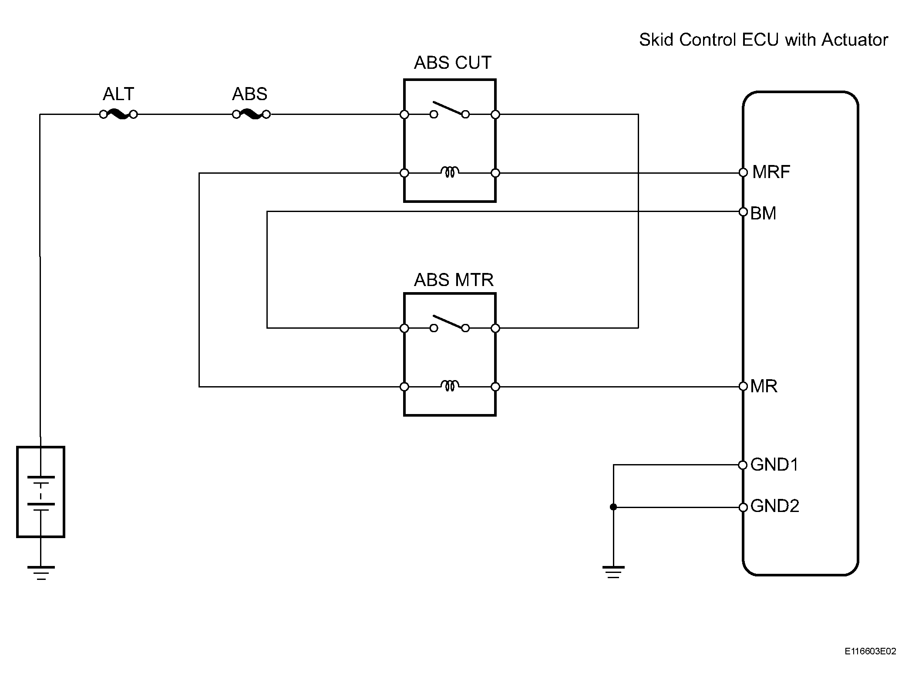

Home
>>
Scion
>>
2006
>>
xB Standard
>>
Repair and Diagnosis
>>
Brakes
>>
Anti-Lock Brakes
>>
Brakes - Abs
>>
Vehicle Stability Control System
>>
DTC C1251/51 Open in Pump Motor Circuit
>>
Wiring Diagram
DTC C1251/51 Open in Pump Motor Circuit: Wiring Diagram
Fig 1: Open In Pump Motor Circuit Wiring Diagram

Courtesy of © TOYOTA, LICENSE AGREEMENT TMS1002